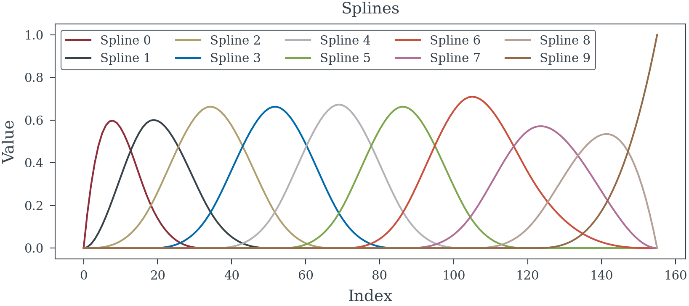
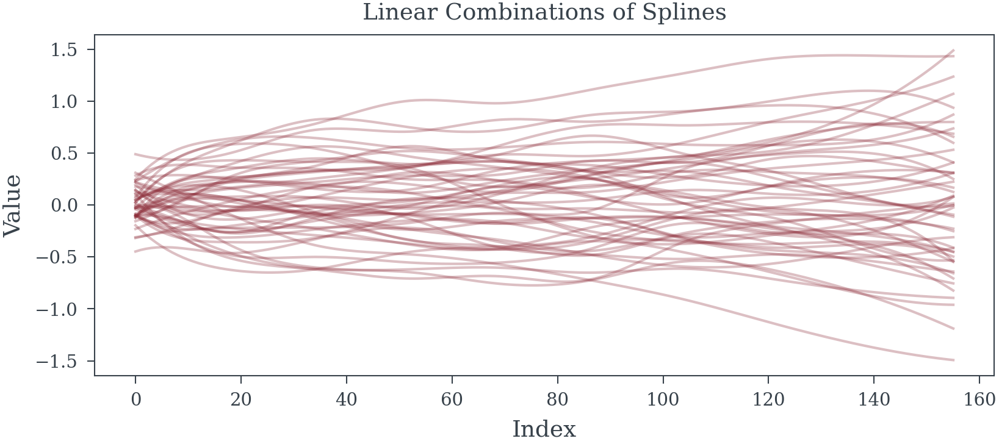
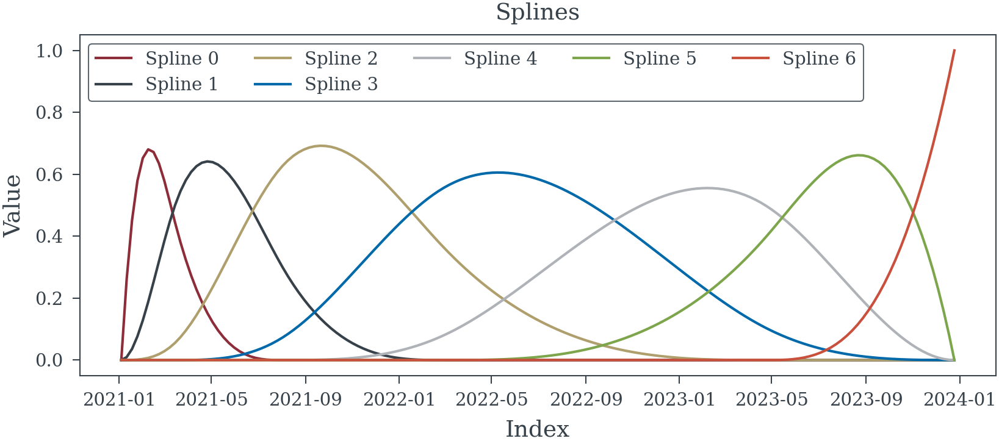
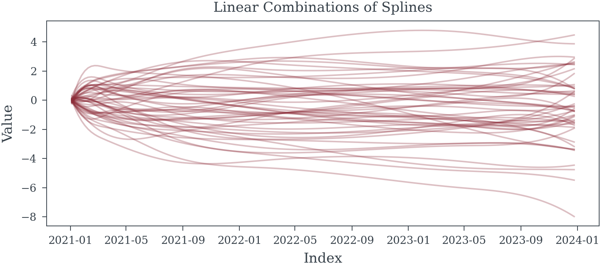
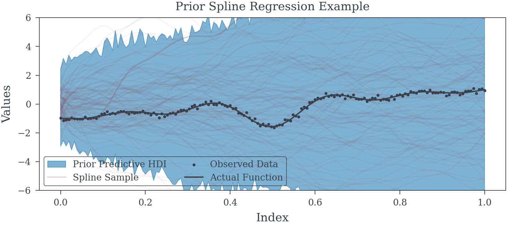
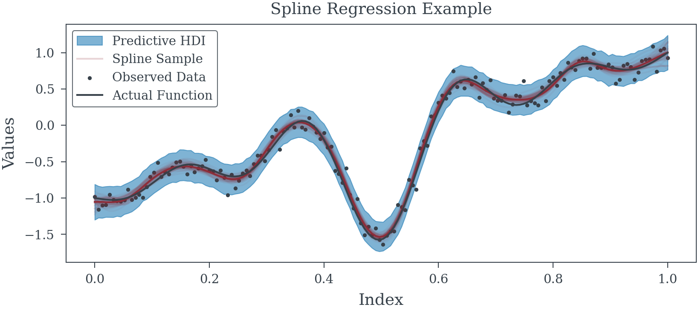

N_SPLINES = 9
INDEX = [i for i in range(156)]
splines = spline_component(
N_SPLINES,
INDEX
)Splines
Spline models and samples
spline_component
spline_component (knots:Union[int,List[~T]], index:Iterable[~T], degree:int=3)
| Type | Default | Details | |
|---|---|---|---|
| knots | Union | Number of knots or interior knots to use | |
| index | Iterable | index | |
| degree | int | 3 | Knot degree defaults to cubic splines |
Example 1 (If knots are an integer)


Example 2 (Knots can be directly specified)
INDEX = pd.date_range('01/01/2021', periods=156, freq="W-MON")
KNOTS = [INDEX[10], INDEX[30], INDEX[60], INDEX[120]]
splines_date = spline_component(
list(map(INDEX.get_loc, KNOTS)),
np.arange(len(INDEX))
)

Example 3 (Spline Regression Model)
INDEX = np.linspace(0, 1, 156)
spline_data = spline_component(19, INDEX, degree=3) # 19 Splines
fun_ = lambda x: np.sin(2*np.pi*5*x)/(20*(x-.5)) + (x-.5) * 2
fun = fun_(INDEX)# Complex Non-linear function to learn
y_obs = fun + np.random.normal(0, .1, size=spline_data.shape[0]) # Noisy observation process
tau_scale = 1.0
c_scale = 0.1
with pm.Model() as model:
tau = pm.HalfCauchy('tau', tau_scale)
lambdas = pm.HalfCauchy("lambdas", 1, shape=spline_data.shape[1])
c = pm.HalfCauchy("c", beta=c_scale)
sigma_coeff = pm.Deterministic("sigma_coeff", tau * lambdas / pm.math.sqrt(c**2 + (tau * lambdas)**2))
betas_ = pm.Normal("betas_", 0, sigma_coeff)
betas = pm.Deterministic("betas", pm.math.cumsum(betas_)) # Enforce Random Walk Process
alpha = pm.Normal("alpha", 0, 1)
spline_trend = pm.Deterministic("splines", spline_data@betas + alpha)
precision = pm.HalfCauchy("precision", 2)
pm.Normal("mu", mu=spline_trend, tau=precision, observed=y_obs)

| mean | sd | hdi_3% | hdi_97% | mcse_mean | mcse_sd | ess_bulk | ess_tail | r_hat | |
|---|---|---|---|---|---|---|---|---|---|
| betas[0] | 0.009 | 0.131 | -0.243 | 0.262 | 0.003 | 0.002 | 1407.0 | 2094.0 | 1.0 |
| betas[1] | -0.063 | 0.118 | -0.281 | 0.159 | 0.003 | 0.002 | 2027.0 | 2518.0 | 1.0 |
| betas[2] | 0.378 | 0.114 | 0.173 | 0.598 | 0.003 | 0.002 | 1621.0 | 2392.0 | 1.0 |
| betas[3] | 0.548 | 0.112 | 0.324 | 0.743 | 0.003 | 0.002 | 1845.0 | 2276.0 | 1.0 |
| betas[4] | 0.389 | 0.109 | 0.177 | 0.590 | 0.003 | 0.002 | 1625.0 | 2538.0 | 1.0 |
| betas[5] | 0.197 | 0.113 | -0.034 | 0.391 | 0.003 | 0.002 | 1607.0 | 2097.0 | 1.0 |
| betas[6] | 0.977 | 0.111 | 0.757 | 1.175 | 0.003 | 0.002 | 1613.0 | 1949.0 | 1.0 |
| betas[7] | 1.206 | 0.113 | 1.009 | 1.435 | 0.003 | 0.002 | 1537.0 | 2096.0 | 1.0 |
| betas[8] | 0.692 | 0.109 | 0.469 | 0.883 | 0.002 | 0.002 | 1924.0 | 2232.0 | 1.0 |
| betas[9] | -0.551 | 0.107 | -0.756 | -0.350 | 0.003 | 0.002 | 1737.0 | 2105.0 | 1.0 |
| betas[10] | -0.544 | 0.106 | -0.734 | -0.341 | 0.002 | 0.002 | 2018.0 | 2124.0 | 1.0 |
| betas[11] | 1.054 | 0.110 | 0.851 | 1.265 | 0.002 | 0.002 | 1973.0 | 2353.0 | 1.0 |
| betas[12] | 1.833 | 0.111 | 1.622 | 2.037 | 0.003 | 0.002 | 1930.0 | 2226.0 | 1.0 |
| betas[13] | 1.488 | 0.111 | 1.281 | 1.702 | 0.003 | 0.002 | 1957.0 | 2474.0 | 1.0 |
| betas[14] | 1.369 | 0.104 | 1.173 | 1.565 | 0.003 | 0.002 | 1728.0 | 2645.0 | 1.0 |
| betas[15] | 1.458 | 0.109 | 1.247 | 1.655 | 0.002 | 0.002 | 2259.0 | 2227.0 | 1.0 |
| betas[16] | 2.077 | 0.109 | 1.865 | 2.279 | 0.003 | 0.002 | 1800.0 | 1994.0 | 1.0 |
| betas[17] | 1.644 | 0.133 | 1.367 | 1.864 | 0.003 | 0.002 | 2406.0 | 2565.0 | 1.0 |
| betas[18] | 1.939 | 0.129 | 1.687 | 2.169 | 0.003 | 0.002 | 2225.0 | 2990.0 | 1.0 |
| betas[19] | 2.060 | 0.106 | 1.875 | 2.274 | 0.002 | 0.001 | 2802.0 | 3035.0 | 1.0 |
| alpha | -1.054 | 0.078 | -1.200 | -0.905 | 0.002 | 0.001 | 2102.0 | 2160.0 | 1.0 |
| tau | 1.020 | 5.563 | 0.003 | 2.581 | 0.113 | 0.080 | 2561.0 | 2382.0 | 1.0 |
